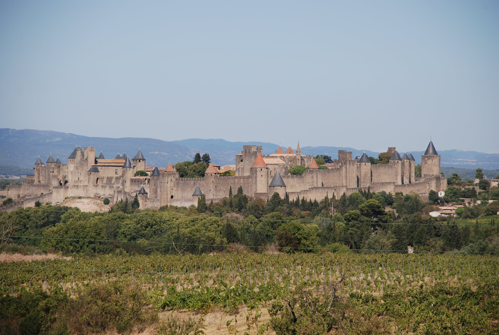

Jours d'excursion
Visites guidées
Cité de Béziers
Durée du trajet : 10 minutes en voiture
La ville de Béziers est à portée de main et vaut vraiment la peine d'être explorée. L'un des meilleurs moyens d'accéder à la ville est de traverser à pied l'ancien Pont Vieux, qui a été récemment restauré.
Le parking du Pont Vieux est entièrement gratuit et si vous êtes suffisamment en forme pour franchir quelques marches et passerelles, vous pourrez facilement accéder à la cathédrale Saint-Nazaire, dans la partie la plus ancienne de la ville. La cathédrale est spectaculaire, avec de magnifiques vitraux et une vue imprenable sur le paysage jusqu'à la Méditerranée.

Depuis la cathédrale, vous pouvez vous promener dans les rues pavées de cette ville ancienne, admirer l'architecture et explorer le marché couvert Les Halles. Le centre commercial de Béziers est l'Allée Paul-Riquet, une large rue piétonne bordée de magnifiques platanes. De nombreux jours de la semaine, cette rue se transforme en un marché animé. Le marché aux fleurs du vendredi est un événement à ne pas manquer.
Cité de Carcasonne
Durée du trajet : 45 - 50 minutes en voiture
La citadelle médiévale de Carcasonne est facilement accessible et offre une excellente journée pour la famille. Perchée sur le flanc d'une colline, cette fortification massive est étonnante, avec tourelles et créneaux qui pourraient sortir tout droit d'un livre d'histoire.

À l'intérieur des remparts se trouve une ville prospère, avec de nombreux magasins, bars et restaurants. Visitez l'église de la cité, la Basilique St-Nazaire, pour admirer d'étonnants vitraux médiévaux. Le château Comtal est un château situé à l'intérieur de la cité et présente certaines des meilleures défenses militaires que l'on puisse trouver dans un château ancien.
Canal du Midi
Durée du trajet : 10+ minutes en voiture
Le Canal du Midi s'étend de la Méditerranée à l'Atlantique et passe à quelques kilomètres de la villa. Il y a de nombreuses façons de profiter du canal : à pied, à vélo ou en bateau. Certains des tronçons les plus spectaculaires sont proches et faciles à visiter :
- L'aqueduc de Béziers, qui fait passer le canal au-dessus de l'Orb.
- Les Écluses de Fonserane, une série de neuf écluses qui permettent aux bateaux de monter ou de descendre une colline.
- L'unique écluse ronde d'Agde, qui offre un choix de trois sorties, reliant Agde au canal du Midi et à l'Hérault.
Il est possible de louer un bateau sur le canal sans permis. Nous vous recommandons de louer un bateau chez Sunboats, dans le village voisin de Colombières. Partez sur le canal en direction de Capestang à un rythme tranquille, en profitant de la tranquillité de la campagne. Sur cette route, il n'y a pas d'écluses à franchir et, à part l'étonnant tunnel du Malbec, le canal est beau et large. Vous traversez plusieurs jolis villages et pouvez vous arrêter pour une dégustation de vin dans un vignoble local. Si vous ne souhaitez pas emporter votre propre pique-nique, Sunboats vous en fournira un moyennant un petit supplément.
Narbonne
Durée du trajet : 35 minutes en voiture
Narbonne n'est qu'à une courte distance en voiture et a beaucoup à voir, y compris le palais des archevêques et l'impressionnante Cathédrale-St-Just.
L'itinéraire le plus simple pour se rendre à Narbonne est l'autoroute A9 (route à péage). Cependant, pour quelques minutes supplémentaires en voiture, vous pouvez rejoindre la ville par des routes secondaires, qui traversent des villages intéressants dans la campagne tranquille.
À seulement 8 miles au sud de Narbonne se trouve l'Abbaye cistercienne de Fontfroide, avec ses cloîtres spectaculaires.
Une autre destination proche de Narbonne qui mérite une visite si vous avez le temps est le village balnéaire de Gruissan. Du haut de l'ancienne tour, la vue sur la Méditerranée est époustouflante.

Dirigez-vous vers le sud en direction de Narbonne plage et suivez les panneaux indiquant Gruissan.
Marseillan
Durée du trajet : 30 minutes en voiture
Marseillan est un petit mais joli port situé sur l'étang de Thau, célèbre pour ses parcs à huîtres. Vous pouvez faire un tour en bateau autour de l'étang ou déguster la dernière pêche dans l'un des nombreux restaurants qui bordent les quais.
Marseillan est également le berceau du Noilly Prat, une liqueur populaire d'Occitanie.
Si vous souhaitez combiner cette excursion avec une sortie à la plage, prenez la route côtière vers Sète depuis Marseillan pour trouver l'une des plages les plus longues et les plus désertes du Languedoc. Nous vous conseillons de vous garer au parking des Trois Digues (gratuit) pour accéder à la plage.
Haute Languedoc
Si vous vous dirigez vers le nord après Béziers, vous trouverez le Parc naturel régional du Haut-Languedoc.
Il s'agit d'un paysage intact de collines ondulantes couvertes de forêts de châtaigniers et de pins. Des rivières au débit rapide traversent de profondes gorges calcaires, passant devant des villages médiévaux accrochés à la paroi rocheuse. Il y a beaucoup à voir et de nombreux itinéraires de randonnée sont disponibles.
Certains villages sont chargés d'histoire et remontent à l'époque médiévale.
Roquebrun
Durée du trajet : 40 minutes en voiture
Une tour du Xe siècle domine l'horizon de ce joli village, perché sur une colline qui surplombe la rivière Orb.

Nous vous conseillons de vous garer sur la rive proche de l'Orb et de traverser le pont à pied pour rejoindre la partie ancienne du village. En chemin, vous trouverez un bon choix de restaurants, de cafés et de bars. Promenez-vous dans les rues étroites et escarpées du village jusqu'à la tour où vous trouverez un jardin méditerranéen (entrée payante). La vue depuis la tour est magnifique.
Olargues
Durée du trajet : 60 minutes en voiture
Olargues est considéré comme l'un des plus beaux villages de France. Cet ancien village médiéval est presque encerclé par la rivière Jaur et s'enorgueillit d'un étonnant pont du XIIe siècle, le Pont du Diable.
Cité de Minerve
Durée du trajet : 60 minutes en voiture
Cette étonnante cité médiévale est perchée au bord d'une gorge calcaire qui borde le lit d'une rivière asséchée. Suivez les panneaux jusqu'au parking principal (payant), d'où vous pourrez entrer à pied dans la vieille cité. Il y a beaucoup à voir à l'intérieur et à l'extérieur des murs de la cité.

À l'intérieur des remparts, vous trouverez des rues étroites bordées de maisons traditionnelles, dont la plupart sont encore habitées. Une sélection de petites boutiques vendent des produits artisanaux locaux, tandis que des bars et des restaurants proposent des rafraîchissements avec des vues fantastiques.
À l'extérieur des remparts, vous pouvez descendre jusqu'au lit asséché de la rivière, d'où la vue sur la cité et l'ancien pont d'accès en pierre est époustouflante.
Minerve était une place forte pour les Cathares qui ont subi un siège en 1210 contre la croisade abigeoise. À la fin du siège, 140 cathares choisirent de mourir sur un bûcher construit sur le lit rocheux de la rivière, plutôt que d'abjurer leur foi.
Activités
Scène de Bayssan
Durée du trajet : 10 minutes en voiture
À une courte distance de la villa avec un parking gratuit et de nombreuses activités gratuites, la Scène de Bayssan a beaucoup à offrir. Pour les enfants, une surface de 10 000 mètres carrés est consacrée aux ressources suivantes:
- parc de jeux pour enfants immense et coloré
- skate park -Basket
- terrain de football
- ping-pong

Le site dispose également d'un parcours de santé, d'une piste cyclable et d'une piste de jogging.
Pour plus d'informations, voir: Scène de Baysann leisure areas: https://scene-de-bayssan.herault.fr/1048-les-espaces-de-loisirs.htm.
En plus de l'espace de loisirs, il y a une exposition de sculptures, un théâtre et un jardin méditerranéen.
Kayak à Réals
Durée du trajet : 30 minutes en voiture
Pour une belle journée pleine d'émotions, nous vous recommandons de louer des kayaks ou des canoës au centre de Réals, près de Cessenon sur Orb. Ils vous équipent d'un équipement de sécurité et vous conduisent haut dans les collines où vous revenez à votre propre vitesse en descendant la rivière. Vous pouvez choisir parmi 4 distances différentes entre 5 kilomètres et 32 kilomètres. Nous vous recommandons de pagayer sur 12 kilomètres, ce qui prend 4 à 5 heures, en passant par des paysages incroyables et des étendues d'eau vive. Faites un pique-, arrêtez-vous en cours de route, baignez-vous dans la rivière et profitez-en.

Pour plus d'informations et pour réserver, voir: Réals Canoe Kayak: https://www.base-reals.com/.
Sports nautiques au Salagou
Durée du trajet: 45 à 50 minutes en voiture
L'immense lac du Salagou, près de Clermont L'Hérault, dispose de nombreux centres nautiques qui offrent un large éventail d'activités, notamment la voile, la planche à pagaie, le canoë et pédalos. Le lac possède de nombreuses petites criques idéales pour bronzer et se baigner, sans sable.

Si vous faites le voyage, essayez de vous imprégner des paysages spectaculaires du cirque de Navacelles ou du système de grottes souterraines de Saint-Guilhem-Le-Désert.